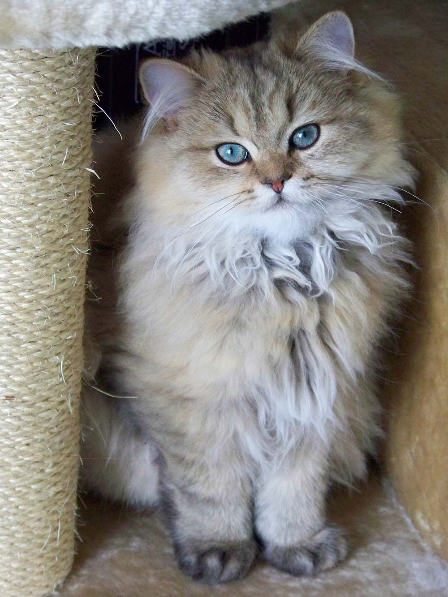
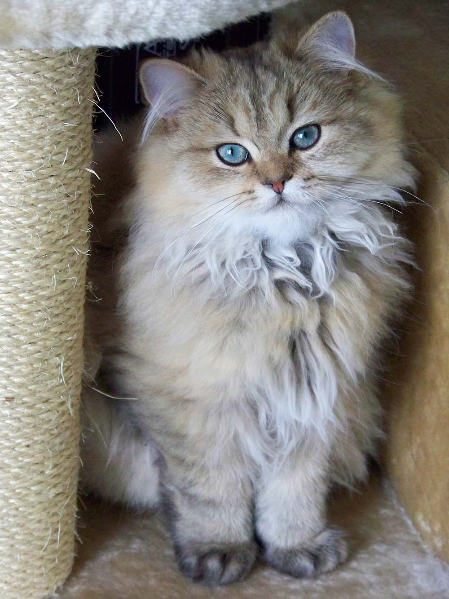
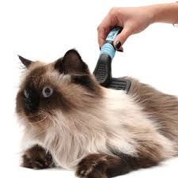

Vivan los gatos
Los gatos son una de las mascotas que más aceptación tienen entre las personas, junto con los perros. Estos felinos tienen una forma de ser muy diferente de la de estos caninos, algo que les hace ser muy especiales, tanto por su actitud, como también por sus características
Los gatos llevan junto al hombre miles de años, adaptándose a nuestra forma de vida y conviviendo con nosotros con el fin de recibir los cuidados necesarios. A diferencia de otros grandes felinos, estos, dado su tamaño, empezaron a empatizar con los humanos debido a que nuestros ancestros lo tenían como parte importante de su sociedad, llegando incluso, en época del Antiguo Egipto, a considerarse antiguos dioses que se habían transformado en estos animales astutos y solitarios.

El gato doméstico lleva conviviendo con el ser humano unos 9.500 años y es una de las mascotas favoritas en todo el mundo. Son de la familia de los félidos, como los tigres o el león. Existen más de 50 razas de gatos domésticos, con características diferentes sobre todo en el color y largura del pelo.
Estos felinos, pese a tener diferentes razas, comparten un tamaño más o menos común. En general pesan entre 2,5 y 7 kg, excepto alguna raza como el Ragdoll o el Maine Coon que puede llegar a pesar los 11kg. Tienen una gran agilidad y elasticidad, lo que les permite dar grandes saltos y pasar por lugares muy estrechos. La esperanza de vida es de 12-14 años para los machos y de 14-16 para las hembras y conservan su energía durmiendo, de hecho, duermen más que cualquier otro animal. Los sentidos del olfato y del oído son muy superiores a los nuestros, pero también cuentan con receptores avanzados de visión, gusto y tacto. El pelaje puede ser de un color, de dos colores, o de tres e incluso cuatro colores sólo en las hembras (si lo presenta un macho es una anomalía que hará que el gato sea, probablemente, estéril).
Ciudado de los gatos
Los gatos son una de las mascotas que más aceptación tienen entre las personas, junto con los perros. Estos felinos tienen una forma de ser muy diferente de la de estos caninos, algo que les hace ser muy especiales, tanto por su actitud, como también por sus características
Los gatos llevan junto al hombre miles de años, adaptándose a nuestra forma de vida y conviviendo con nosotros con el fin de recibir los cuidados necesarios. A diferencia de otros grandes felinos, estos, dado su tamaño, empezaron a empatizar con los humanos debido a que nuestros ancestros lo tenían como parte importante de su sociedad, llegando incluso, en época del Antiguo Egipto, a considerarse antiguos dioses que se habían transformado en estos animales astutos y solitarios.
.jpg)
Razas mas conocidas de gatos
- Angora
- Bengali
- Siames
- Persa
- Ragdoll
- Mau Egipcio
- Bombay
- Ragamuffin
.jpg)
.jpg) 

Alimentacion
Los gatos son principalmente carnívoros, aunque también van a necesitar de verduras para desarrollarse mejor. El porcentaje de este último será muy reducido, ya que su sistema digestivo está mejor preparado para la carne o el pienso elaborado con carne, pero sin embargo, una alimentación en la que se incluya verduras va a conseguir que su estómago, como también sus intestinos queden más limpios.
La consistencia de la comida también es relevante para estos animales, que deberá ser fundamentalmente seca. Para darles algún medicamento se recomienda comida algo más blanda
Al igual que para las personas, las vitaminas son esenciales para una buena dieta de estos felinos. Están presentes un muchos alimentos, pero en especial, para los gatos, las que están presentes en alimentos de origen animal son mejores ya que las absorben más fácilmente.
mejores comidas para gatos
- Max cats
- cat chow
- whiskas
- oh my cat
.jpg)
.jpg)
Baños
Dado que los gatos son peluqueros de lo más exigentes, normalmente no necesitan bañarse, ¡ni ellos quieren! No obstante, en contadas ocasiones tu gato puede ensuciarse de verdad o el pelaje puede entrar en contacto con aceite o sustancias tóxicas
¿como bañarlo?
Pon en el suelo una esterilla antideslizante (o incluso una toalla). Llena la bañera con suficiente agua caliente con la que bañar a tu mascota. No llenes la bañera en exceso, ya que el gato se asustará por la profundidad del agua y aumentarás el riesgo de derramar agua por el suelo. Utiliza siempre un champú especial que no contenga sustancias químicas ni perfumes. No utilices nunca champú para humanos, ya que no es adecuado para gatos debido a la diferencia en los niveles de pH. Una vez que el gato esté en la bañera, aplica una pequeña cantidad de champú evitando la zona de las orejas y los ojos. Es más fácil lavar una parte específica del gato que todo el cuerpo. Por lo tanto, si hay una única zona sucia o contaminada, céntrate en lavar solo esta parte. Si tienes que lavarle todo el cuerpo, enjabónale del cuello a la cola sin olvidar la parte inferior, las patas y los pies. Probablemente te resultará más fácil si sacas el gato de la bañera para ello (ponlo encima de una toalla si quieres), ya que algunos champús medicinales requieren cierto tiempo de contacto. Después de enjabonar, aclara cuidadosamente con la ducha o una jarra de agua templada evitando los ojos y las orejas. Ten en cuenta que después de un buen remojo, a tu gato le encantará sacudirse enérgicamente para quitarse el exceso de agua. Puedes esperar a que termine y luego secar a tu mascota con otra toalla. Completa el proceso de secado en una habitación cálida y no dejes que salga hasta que esté del todo seco.
cortado de uñas
Corta las uñas una a una y asegúrate de que la hoja corte desde la parte superior hasta la inferior, para evitar que se parta. ¡Cuidado con cortar demasiado! Si no estás seguro de dónde empieza la vena, mejor cortar menos uña. En este proceso siempre debes mantener la calma e ir lentamente, aunque tu gato maúlle. Al principio, puede que le cortes solo un par de uñas. No te preocupes, espera a tener una nueva oportunidad y a dominar la técnica.
A cada felino le crecen las uñas a un ritmo diferente, lo recomendable es cortárselas cada dos o tres semanas para evitar que estén demasiado largas y que se partan o rompan. Revisa las de tu gato regularmente y dale el cuidado que se merece.
Cepillado ¿por que es importante?
Cepillar a un gato no sólo elimina la suciedad, la grasa y el pelo muerto de su cuero cabelludo, sino que también ayuda a eliminar las escamas muertas de la piel y estimula la circulación sanguínea, mejorando el estado general de su piel. Uno o dos cepillados por semana ayudará a tu gatito a mantener un brillo saludable en su pelaje. Además, esas sesiones regulares serán especialmente beneficiosas cuando tu gato se haga mayor y ya no sea capaz de asearse por sí mismo tan meticulosamente.
